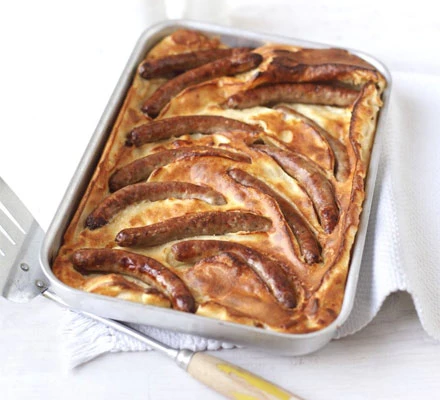

Toad in the hole Recipe

This recipe and image both originated from https://www.bbcgoodfood.com/recipes/sams-toad-hole
The very best toad in the hole
This is by far the best toad in the hole I have ever made and this recipe is very easy to follow.
If, like me, you love a well risen yorkshire, you will love this toad in the hole for sure.
Ingredients
Serves 4
- 12 sausages
- 1 tablespoon sunflower oil
For the batter
- 140g plain flour
- 2 eggs
- 175ml semi-skimmed milk
Steps
- Heat the oven to 200C. Put the sausages in a roasting tin with the oil and bake for 15 mins until browned
- Make the batter. Tip the flour into a bowl with 1/2 tsp salt, make a well in the middle and crack the eggs into it. Use a whisk to mix it together, then slowly add the milk, whisking all the tim. Leave to stand until the sausages are done.
- Remove the sausages from the oven - be careful because the fat will be sizzling hot - if it isn't, put the tin on the hob for a few minutes until it is.
- Pour in the batter mix, transfer to the top shelf of the oven, then cook for 25-30 mins, until risen and golden. Serve with gravy and your favourite veg.
Back to recipes